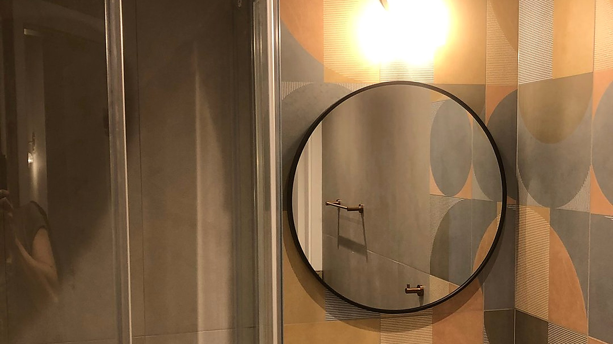

Ocena 4.9/5 i ponad 32 opinii w Google. Klienci cenią nas za profesjonalizm, komunikację, terminowość i porządek na budowie.
Remont generalny mieszkania oceniam jak najbardziej pozytywnie. Panowie wykazali się dużą dbałością o szczegóły, przykładali się do pracy, podpowiadali rozwiązania. Pan Kamil był ze mną w stałym kontakcie, wszystko konsultował na bieżąco, służył radą i pomocą przy podejmowaniu decyzji. To firma godna polecenia. Dziękujemy za piękne mieszkanie.
Bardzo dobra rodzinna firma! Remont generalny mieszkania został wykonany na najwyższym poziomie, panowie są bardzo mili, mają dużo swoich pomysłów, ale też są otwarci na nowe. Pan Kamil bardzo pomagał przy wyborze i kupowaniu materiałów. Dzięki Tyrbud mam piękne nowe mieszkanie i jestem szczęśliwa! Jeśli remonty, to tylko z Tyrbud! Polecam z całego serca!
Jesteśmy bardzo zadowoleni z efektu końcowego! Panowie mają wysoką kulturę pracy, odpowiadali na wszystkie pytania, konsultowali każdą decyzję, na bieżąco naprawiali drobne niedociągnięcia i trzymali się początkowej wyceny, która jak na Warszawę jest konkurencyjna. Łazienka wygląda tak, jak sobie wymarzyliśmy. Dziękujemy i polecamy!
Solidni i wszechstronni fachowcy, bardzo polecam! W dodatku pan Kamil i jego tata bardzo sympatyczni i kontaktowi, potrafią także dobrze doradzić pod względem technicznym. Prace wykończeniowe zostały wykonane starannie, a cały proces przebiegał bezstresowo. Jestem bardzo zadowolona z końcowego efektu. Bardzo dziękuję!
Bardzo dobra, profesjonalna firma, która szybko i solidnie wykonuje remont mieszkania. Wszystko jest wykonane ładnie i dokładnie. Wielka pomoc w zakupach materiałów. Firma jest godna zaufania i bardzo pomocna podczas remontu. Bardzo polecam tę firmę. Najlepsza w Warszawie.
Znakomita, profesjonalna firma rodzinna. Pan Kamil i jego tata to życzliwi, cierpliwi, przemili fachowcy uważnie słuchający próśb i uwag. Służą radą, podrzucają pomysły. Pan Kamil nieoceniony w zakupach, wyborach i organizacji. Generalny remont mieszkania przeprowadzony sprawnie, punktualnie i w miłej atmosferze. Z pełną odpowiedzialnością polecamy.
Profesjonalna firma, która szybko i solidnie wykonała generalny remont mieszkania. Przede wszystkim był doskonały kontakt z panem Kamilem, który szybko reagował na nasze prośby czy uwagi. Mają fachowców od wszystkich prac, więc nie musieliśmy nikogo szukać na własną rękę, a dodatkowo pomagali w zakupach i przewożeniu dużych gabarytów. Szczerze polecamy ekipę pana Kamila!
Kapitalny remont małego mieszkanka wykonany bardzo sprawnie, solidnie, pięknie. Pan Kamil jest profesjonalistą w każdym calu, pomaga we wszystkim. Wiele remontów przeżywałam, a tym razem „zdalnie” i bez mojego fizycznego udziału mogłam liczyć nie tylko na wykonawstwo, ale nawet odbiory elementów wyposażenia i montaż mebli. Odbieram gotowe mieszkanie „na gotowo”! Bardzo polecam.
Już po pierwszej rozmowie z panem Kamilem wiedzieliśmy, że nie będziemy żałować swojego wyboru. Pan Kamil wykazał pełen profesjonalizm na każdym realizowanym etapie. Doświadczenie w branży, duże zaangażowanie w powierzone zadania oraz kompetencja. Polecam z całego serca.
Pan Kamil wykonał dla nas, oprócz innych prac, przebudowę i wykończenie dwóch łazienek. Oprócz efektu pracy, chwalę pana Kamila za doskonały kontakt: słuchał naszych licznych uwag, rozumiał je, przy komplikacjach dopytywał, wykonywał i dawał znać, że gotowe.
Pełen profesjonalizm, fachowość, staranność, zaangażowanie. Duże doświadczenie i kompetencje. Świetna komunikacja. Pan Kamil cierpliwie doradza, na bieżąco konsultuje. Znakomicie przeprowadzony remont generalny mieszkania. Serdecznie polecam.
Remont mieszkania przebiegł bezproblemowo, panowie dbali o każdy szczegół. Jestem zachwycona i na pewno wrócę do współpracy przy następnych zmianach w mieszkaniu. Serdeczni, służący pomocą na każdym etapie współpracy, prawdziwi fachowcy!
Pan Kamil to fachowiec o wysokiej kulturze osobistej, który zawsze dotrzymuje słowa i dba o porządek na miejscu pracy. Jakość wykonania usług stoi na bardzo wysokim poziomie, a do tego oferuje konkurencyjne ceny. Z pełnym przekonaniem polecam jego usługi.
Bardzo dobre i sprawne wykonanie generalnego remontu 3-pokojowego mieszkania. Rewelacyjny kontakt z Kamilem i jego ekipą. Wykonanie na bardzo wysokim poziomie, bez najmniejszych problemów. Profesjonaliści godni polecenia.
Polecam! Profesjonalizm, komunikacja, pomoc, przemiły pan Kamil, jego tata i cały zespół, wszystko, o czym marzysz, kiedy planujesz generalny remont. Dziękuję, że remontowy koszmar wcale nie okazał się koszmarem.
Profesjonalnie wykonane projekty wykończenia łazienki i oświetlenia: przy dużych kafelkach położona minimalna fuga, rozłożenie płytek zgodnie z nowoczesną estetyką, wykonanie staranne, dobre doradztwo. Polecam.
Najlepsza ekipa od remontu mieszkań w Warszawie. Cały remont wykonany w 6 tygodni, 2 tygodnie przed umówionym terminem! Ceny na Warszawę bardzo dobre. Świetna jakość wykonania, każdy detal dopracowany.
Remont został wykonany terminowo i na wysokim poziomie! Nie było problemów we współpracy z projektantem wnętrz. Panowie są kulturalni i dokładni. Polecam!
Bardzo polecam usługi pana Kamila i jego taty, to godna polecenia rodzinna firma. Błyskawicznie, starannie i dokładnie wykończyli moje mieszkanie. Pan Kamil potrafi doradzić w wyborze materiałów i pomaga w zakupach. Przez cały proces był ze mną w stałym kontakcie. Udało się zrealizować wszystkie moje pomysły, nawet te dość niestandardowe. Efekt końcowy jest naprawdę wspaniały. Polecam z całego serca!
Jestem pełna zachwytu dla firmy Tyrbud. Otrzymałam kontakt z polecenia i się nie zawiodłam. Dokładność, z jaką została wykonana usługa, jest godna podziwu.
Remont mieszkania wykonany na najwyższym poziomie. Bardzo dobry kontakt z panem Kamilem! Polecam.
Bardzo rzetelna firma, remont całego mieszkania poszedł bardzo sprawnie. Dobry kontakt z panem Kamilem, człowiek słowny.
Prace remontowe panowie wykonali bardzo fachowo, solidnie i w terminie. Bardzo dziękujemy za dobrą współpracę.
Zacznę prosto: gdybym mógł, dałbym 6+, ale na Google maks to 5 😄 Jestem bardzo zadowolony ze współpracy 😌
Współpraca z Panem Kamilem była wzorowa i pozytywnie zaskoczyła mnie pod każdym względem — zarówno jeśli chodzi o komunikację (konkretną, prostą i bezproblemową), jak i wiedzę oraz doświadczenie. Mój remont nie należał do najprostszych — kluczowe było przeniesienie miski WC z osobnej toalety do łazienki i poprowadzenie całej hydrauliki/odpływu. Na początku wydawało mi się to wręcz niemożliwe, ale po skontaktowaniu się z firmą Tyrbud przestałem się obawiać i wszystko zostało wykonane bez problemu. Do tego widać dokładność i dbałość o szczegóły, o których ja sam nie pomyślałem, jak np. docięcie płytek drewnopodobnych na ścianie po obu stronach, żeby nie było małych docinek — to się ceni. Co do komunikacji, zawsze gdy było coś niepewne, Kamil kontaktował się, żeby to potwierdzić, często sugerując jakieś rozwiązania, tym samym mogłem być spokojny, że nic nie zostanie przeoczone. Fachowcy podchodzili do remontu łazienki tak, jakby sami chcieli z niej korzystać 😄
Już przy pierwszym spotkaniu, jeszcze przed podpisaniem umowy, Pan Kamil zrobił na mnie bardzo dobre wrażenie. Wysłuchał mojej wizji i od razu było widać, że dokładnie wie, co i jak należy zrobić. Sam pracuję na co dzień z ludźmi, więc zaufałem intuicji — i to była bardzo dobra decyzja. Zresztą, przekonały mnie również wcześniejsze opinie oraz zdjęcia prac remontowych, które znalazłem na Google.
Jestem bardzo zadowolony z całej współpracy. Firma Tyrbud zadbała o mieszkanie lepiej, niż się spodziewałem — odpowiednio je zabezpieczając oraz pomagając w doborze i zakupie materiałów, w których sam nie mam dużego doświadczenia i wiedzy. Ja odpowiadałem głównie za wybór wyposażenia, co było już znacznie prostsze.
Moje wcześniejsze doświadczenia z innymi fachowcami bywały różne, ale tutaj mogłem spać spokojnie — wiedziałem, że wszystko zostanie dopięte na ostatni guzik. Remont trwał około 3–4 tygodni (łącznie z demontażem starej łazienki) i w mojej ocenie to bardzo dobry czas — wolę dokładność niż pośpiech. Co więcej, prace zostały zakończone kilka dni przed uzgodnionym terminem. Efekt remontu przerósł moje oczekiwania, nie potrafię się nacieszyć moją nową łazienką 🤩
Na koniec mała wskazówka dla przyszłych klientów: warto mieć przemyślaną wizję lub projekt i unikać zmian w trakcie prac — to bardzo ułatwia współpracę obu stronom.
Zdecydowanie polecam! Na pewno jeszcze skorzystam z doświadczenia firmy Tyrbud.
Bardzo dziękuję Panu Kamilowi oraz jego ekipie za znakomite wykonanie remontu mojego salonu medycyny estetycznej. Pan Kamil wykazał się profesjonalizmem oraz bardzo uczciwym podejściem. Atrakcyjna cena i efekt, z którego jestem bardzo zadowolona. Serdecznie polecam!
Fachowa ekipa. Remont wykonany profesjonalnie zgodnie z ustaleniami. Duża pomoc fachowców. Serdecznie polecam!
Serdecznie polecam! 👍😊 Remont wykonany zgodnie z oczekiwaniami.
Dobra, solidna firma rodzinna. Godna polecenia. Ładne i precyzyjne wykonanie kuchni.
Bardzo dobrze przeprowadzony remont lokalu. Dodatkowo Panowie zgodzili się ogarnąć to w weekend, by nie kolidowało nam z pracą.
Skontaktuj się z nami i otrzymaj bezpłatną, niezobowiązującą wycenę.
Umów bezpłatną wycenę →